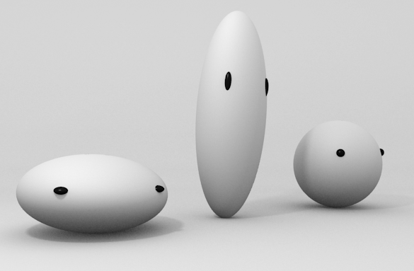
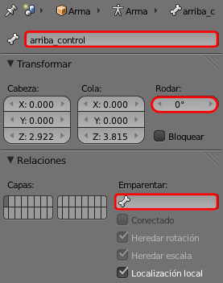
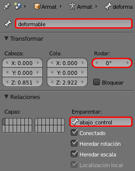
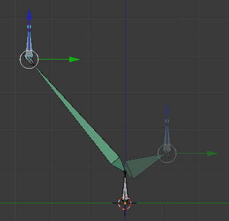
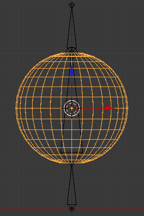
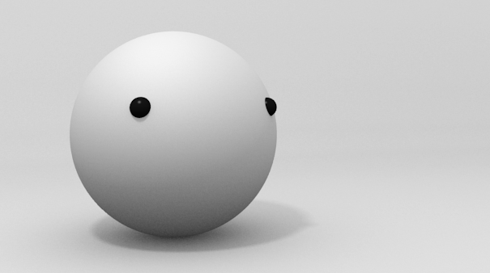

Estiramientos
Vamos a crear un nuevo personaje realmente sencillo. Incorpora una tipo de restricción que no es Cinemática inversa pero lo consideramos lo suficientemente importante como para no cerrar el tema sin mencionarlo y este apartado es el mejor sitio.

Sólo necesitamos tres huesos. Partiendo del primero de ellos (Añadir/Esqueleto/Hueso único) hacemos dos extrusiones ("E") en Modo Edición  y restringiendo en Z. En el panel Hueso
y restringiendo en Z. En el panel Hueso  nos aseguramos de que no tengan rotaciones y los llamamos abajo_control, deformable y arriba_control.
nos aseguramos de que no tengan rotaciones y los llamamos abajo_control, deformable y arriba_control.
Estas son la características de cada uno de ellos:
- arriba_control. Tiene que pertenecer al mismo esqueleto pero sin que haya una relación de parentesco con deformable. Como hemos obtenido el hueso por extrusión ("E") debemos eliminar el parentesco a mano borrando deformable del campo Emparentar.

- deformable. Tiene que ser hijo de abajo_control.

- abajo_control. No es hijo de ningún otro hueso por lo que en principio actúa como padre final.
Antes de seguir, y para una mejor organización, vamos al panel Objeto  y cambiamos el nombre Armature por esqueleto.
y cambiamos el nombre Armature por esqueleto.
Estiramiento
Seleccionamos en Modo Posado  el hueso deformable y le aplicamos una Restricción de hueso
el hueso deformable y le aplicamos una Restricción de hueso  de tipo Estirar a con Objetivo: esqueleto y Hueso: arriba_control.
de tipo Estirar a con Objetivo: esqueleto y Hueso: arriba_control.
La consecuencia es que al mover arriba_control el hueso deformable sufrirá un estiramiento/encogimiento en consecuencia. Es el llamado efecto squash&stretch.
Y no sólo eso sino que el efecto es similar al desplazar el hueso abajo_control.
La configuración del rigging tiene un pequeño defecto: para desplazarlo en conjunto es necesario seleccionar los dos controladores y eso no es bueno. Pero al ser un personaje tan simple no vamos a crear un hueso posición que hiciera las veces de padre final.
Nos falta el personaje que puede ser una simple esfera (Añadir/Malla/Esfera UV) con el desplazamiento ("G") y escalado ("S") necesarios para que deformable sea su padre.

Seleccionamos primero la esfera en Modo Objeto  y después el hueso deformable en Modo Posado
y después el hueso deformable en Modo Posado  y hacemos "Control P" y escogemos Hueso. Con esto la esfera se deforma al desplazar arriba_control y abajo_control.
y hacemos "Control P" y escogemos Hueso. Con esto la esfera se deforma al desplazar arriba_control y abajo_control.
Para ser un personaje debe tener algún detallito más. Nosotros optamos por algo sencillo como unos pequeños ojos. Estos añadidos deben formar parte de la misma malla, así que no olvidaremos sumarlos (Objeto/Unir) a la esfera. En esta edición la esfera debe ser el último objeto seleccionado o perderemos la restricción. Al objeto resultante le denominamos personaje_bola.
